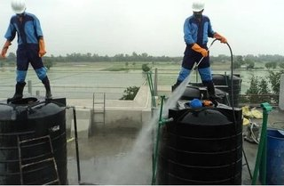

ليش الغبار والرمل يدخل خزاني حتى لو مقفل؟
تفتح الحنفية وتلاحظ حبيبات رمل ناعمة في الكاسة، أو تشوف طبقة بنية في قاع الخزان وقت التنظيف، وأنت متأكد إن الغطاء مقفل. هالسؤال يوصلنا كثير من بيوت الرياض، والجواب إن دخول الغبار والرمل للخزان بالرياض ما يحتاج غطاء مفتوح. الغبار عندنا ناعم لدرجة إنه يلقى طريقه من أصغر فتحة، والقفل لحاله ما يسد كل المنافذ.
في هالدليل نشرح ليش يدخل الغبار رغم إن الخزان مقفل، ونمر على المنافذ اللي يدخل منها فعليًا، وكيف تعرف إن خزانك تأثر، وكيف تفحصه من برا بدون ما تعرض نفسك لخطر. وبعدين نتكلم عن الحلول اللي تقفل هالمنافذ، ومتى تحتاج تنظيف، والأخطاء اللي تخلي الرمل يرجع بسرعة.
💡 المعلومات هنا عامة للتوعية. لا تنزل داخل الخزان بنفسك ولا تدخل راسك فيه، لأنه مكان مقفل وممكن تكون التهوية فيه ضعيفة. وإصلاح التشققات في الخزانات الخرسانية شغل يحتاج فني مختص يقيّم حالة الخزان على الطبيعة.
ليش يصير دخول الغبار والرمل للخزان بالرياض حتى لو الغطاء مقفل؟
أغلب الناس يتخيلون الخزان صندوق مقفل من كل جهة، مع إنه لازم يتنفس عشان الموية تدخل وتطلع بسهولة، فيه ماسورة تهوية، وماسورة فائض، وفتحة تفتيش، ومداخل للمواسير. وكل وحدة من هذي ممكن تصير طريق للغبار لو ما كانت محمية صح.
وفوق هذا، جزء من غبار الرياض ناعم جدًا، يطير مع الهوا ويدخل من فراغات ما تنتبه لها، مثل فرق بسيط بين الغطاء والإطار، أو شق صغير في سقف الخزان الأرضي. ولهالسبب يتكرر دخول الغبار والرمل للخزان بالرياض في بيوت أصحابها حريصين ويقفلون الغطاء دايم.
والقفل نفسه غالبًا يحمي من فتح الغطاء، مو من الغبار. ممكن يكون الغطاء مقفل بقفل حديد قوي، لكنه مركب على إطار مايل أو بدون حشوة مطاط، فيبقى فيه فراغ يمر منه الهوا والغبار طول الوقت.
طبيعة الرياض: عواصف وأتربة كثيرة
الرياض مدينة صحراوية، والغبار جزء من حياتها اليومية. فيه أيام عادية يكون فيها غبار خفيف معلق في الجو، وفيه عواصف ترابية قوية تغطي السماء وتدخل البيوت من الشبابيك والأبواب. وفي هالأيام يزيد دخول الغبار والرمل للخزان بالرياض في أي خزان فيه منفذ مكشوف.
والأحياء الجديدة اللي حولها أراضي فاضية أو مشاريع بناء تتعرض لأتربة أكثر، ويكون فيها دخول الغبار والرمل للخزان بالرياض أسرع من غيرها، لأن الحفر والشاحنات تثير الغبار يوميًا. وكذلك البيوت القريبة من الطرق السريعة أو الأراضي الزراعية المكشوفة.
الخزان العلوي
الخزان العلوي على السطح مكشوف للهوا من كل الجهات، فهو أول شي يستقبل الغبار وقت العاصفة. وأغطية الخزانات البلاستيكية غالبًا تكون مسننة أو مركبة بالضغط، ومع الشمس والحرارة ممكن تتشوه شوي، فتصير ما تقفل بإحكام. وهنا يصير دخول الغبار والرمل للخزان بالرياض مسألة وقت.
الخزان الأرضي
الخزان الأرضي يكون في الحوش أو تحت الأرض، وفتحته غالبًا على مستوى البلاط. وهذا يعني إن الرمل اللي يتجمع في الحوش، وموية غسيل الحوش، والتراب اللي تكنسه، كلها قريبة من الفتحة. ولو كانت الفتحة على مستوى الأرض بدون حافة مرتفعة، يصير دخول الغبار والرمل للخزان بالرياض مع أي موية تمشي عليها.

المنافذ اللي يدخل منها الغبار فعليًا
لما نعاين خزانات فيها رمل، نلقى إن السبب غالبًا واحد من هالمنافذ أو أكثر. ومعرفة المنفذ هي نص الحل، لأن تنظيف الخزان بدون ما تقفل المنفذ يخلي الرمل يرجع بعد أسابيع.
1. غطاء فتحة التفتيش غير محكم
فتحة التفتيش هي الفتحة اللي ينزل منها الفني للتنظيف. وغطاؤها لازم يركب على إطار مستوي، وتحته حشوة مطاط تسد الفراغ. لكن في بيوت كثيرة نلقى الغطاء حديد بدون أي حشوة، أو الحشوة متشققة من الشمس، أو الإطار نفسه مكسور من طرف. وفي هالحالة يكون دخول الغبار والرمل للخزان بالرياض مستمر حتى لو الغطاء مقفل بقفل.
وفيه أغطية خشب أو صاج مصنوعة يدويًا، وهذي غالبًا ما تقفل بإحكام أبدًا، وتتحرك مع الهوا. ولو كان الغطاء أصغر من الفتحة بشوي، يبقى فراغ حوله يمر منه الغبار والحشرات.
2. مواسير التهوية بدون شبك
ماسورة التهوية ضرورية، لأنها تخلي الهوا يدخل ويطلع وقت ما ينزل أو يرتفع مستوى الموية. لكن لو كانت مفتوحة بدون شبك ناعم، فهي من أكثر أسباب دخول الغبار والرمل للخزان بالرياض اللي نشوفها. وأحيانًا يكون فيها شبك، بس فتحاته واسعة تمنع الحشرات الكبيرة وما تمنع الرمل الناعم.
واتجاه الماسورة يفرق كثير. الماسورة اللي فتحتها لفوق تستقبل الغبار النازل مباشرة، أما اللي منحنية لتحت على شكل رقبة إوزة فتقلل دخول الغبار بشكل واضح. وفي بيوت كثيرة نلقى الماسورة مستقيمة ومفتوحة للسماء.
3. ماسورة الفائض المفتوحة
ماسورة الفائض تصرّف الموية الزايدة لو امتلى الخزان. وهي غالبًا مفتوحة من طرفها الخارجي، وموصلة مباشرة لداخل الخزان من فوق مستوى الموية. ولو كان طرفها الخارجي في الحوش أو على السطح بدون غطاء أو شبك، يدخل منها الغبار، وأحيانًا الحشرات والصراصير.
4. تشققات في غطاء الخزان الخرساني
الخزان الأرضي الخرساني له سقف خرساني، ومع الوقت والحرارة وحركة التربة ممكن تتكون فيه تشققات أو تتضرر الفواصل بين أجزائه. والشق اللي عرضه ملليمترات بس يكفي يمر منه الرمل الناعم، خصوصًا لو كان الحوش يتغسل بموية تمشي فوق السقف وتنزل في الشق.
وهالنوع من المنافذ ما تشوفه بسهولة، لأنه ممكن يكون تحت بلاط أو تحت طبقة تراب. وغالبًا يبان أثره من داخل الخزان: خطوط رمل أو بقع تحت مكان الشق.
5. مدخل التعبئة وفتحات المواسير
المواسير اللي تدخل للخزان، سواء من الشبكة أو من الوايت أو للمضخة، تمر من فتحات في جدار الخزان أو سقفه. ولو ما كانت هالفتحات مسدودة حول الماسورة بمادة مناسبة، يبقى فراغ حولها. وكثير من البيوت فيها فتحة تعبئة الوايت مكشوفة، يفتحها السواق ويقفلها بغطاء بلاستيك بسيط، أو يتركها بدون غطاء أصلًا.
محتاج تنظيف احترافي؟
فريقنا يعاين خزانك من برا ومن داخل، ويحدد لك من وين يدخل الغبار بالضبط، قبل ما ينظف ويقفل المنفذ
كيف تعرف إن الغبار دخل فعلًا؟
فيه علامات واضحة تقول لك إن خزانك صار يستقبل غبار ورمل، حتى قبل ما تفتحه:
- حبيبات رمل ناعمة في كاسة الموية أو قاع الدلو
- عكارة في الموية تبان بعد كل عاصفة ترابية
- فلاتر الحنفيات تنسد بسرعة، وفيها رمل أو طين
- فلتر موية الشرب يتغير لونه أسرع من المعتاد
- رواسب بنية في قاع الغسالة أو السخان
- تغير واضح في الموية بعد موسم الأتربة
لو لاحظت علامتين أو أكثر، فغالبًا فيه منفذ مفتوح. وأوضح علامة تكون وقت التنظيف نفسه: لو لقيت طبقة رمل في القاع رغم إنك نظفت الخزان من شهور قليلة، فهذا معناه إن دخول الغبار والرمل للخزان بالرياض مستمر بشكل أسرع من الطبيعي.
رواسب القاع
أي خزان يتجمع فيه شوية رواسب مع الوقت، وهذا طبيعي. لكن لما تكون الرواسب طبقة رمل واضحة، أو تتجمع في زاوية معينة تحت فتحة أو شق، فهذا يدل على منفذ. وموقع الرواسب نفسه يساعد الفني يحدد من وين يدخل الغبار.
العكارة بعد العواصف
لو كانت الموية صافية أغلب الوقت، وتتعكر بعد العواصف بالذات، فالعلاقة واضحة. الغبار اللي دخل وقت العاصفة يكون معلق في الموية أول كم يوم، وبعدين ينزل للقاع، ويرجع يتحرك كل ما تشتغل المضخة أو ينسحب الماء بقوة.
كيف تفحص خزانك بنفسك من برا بأمان؟
تقدر تسوي فحص بسيط من برا بدون ما تنزل الخزان ولا تدخل راسك فيه. والهدف إنك تلقى المنافذ الظاهرة، وتعطي الفني صورة واضحة لما يجي:
- شيك على غطاء فتحة التفتيش: هل يركب مستوي؟ هل فيه فراغ حوله؟ هل تحته حشوة مطاط سليمة؟
- دوّر على ماسورة التهوية، وشوف اتجاهها وهل عليها شبك ناعم.
- تتبع ماسورة الفائض لطرفها الخارجي، وشوف هل هو مكشوف.
- شوف سطح الخزان الأرضي أو البلاط فوقه: فيه شقوق؟ فيه أماكن هابطة؟
- شيك على فتحات المواسير وفتحة تعبئة الوايت: هل حولها فراغ؟
- صوّر كل اللي لاحظته بالجوال، عشان تعرضه على الفني.
وأفضل وقت للفحص يكون بعد عاصفة ترابية. وقتها يكون الغبار المتجمع حول المنافذ واضح، وتقدر تشوف وين تكوم الرمل. ولو فتحت الغطاء عشان تشوف، خلك واقف برا، واستخدم كشاف من بعيد، ولا تنحني فوق الفتحة.
ولا تحاول تشيل الرمل من القاع بنفسك أو تنزل أدوات داخل الخزان. تنظيف خزان المياه من الغبار والرمل بالرياض يحتاج تفريغ الخزان وتجهيزات سلامة، وأي محاولة عشوائية ممكن تحرك الرواسب وتخليها تنتشر في الموية.
منع دخول الغبار لخزان المياه بالرياض: الحلول اللي تقفل المنافذ
لما يتحدد المنفذ، يصير الحل واضح. وأغلب الحلول بسيطة نسبيًا، لكن لازم تتسوى صح عشان تدوم. والفكرة إنك تقفل كل طريق للغبار، وتخلي الخزان يتنفس بنفس الوقت.
حشوة محكمة للغطاء
أول خطوة في منع دخول الغبار لخزان المياه بالرياض غالبًا تكون الغطاء. تركيب حشوة مطاط مناسبة حول إطار فتحة التفتيش يسد الفراغ اللي يمر منه الغبار. ولو كان الإطار مكسور أو الغطاء مشوه، الأفضل يتبدل بغطاء محكم مصمم للخزانات، بدل الترقيع. وبعض الأغطية تجي بمقابض ضغط تشد الغطاء على الحشوة، وهذي ممتازة في الأماكن المكشوفة للغبار.
شبك ناعم لمواسير التهوية
ومن أبسط خطوات منع دخول الغبار لخزان المياه بالرياض إنك تركب شبك ناعم من مادة ما تصدي على طرف ماسورة التهوية، واتأكد إن الماسورة منحنية لتحت. والشبك لازم يكون ناعم كفاية يوقف الرمل، لكن مو لدرجة إنه ينسد بسرعة ويمنع الهوا. وراجعه كل كم شهر ونظفه، خصوصًا بعد العواصف.
حماية ماسورة الفائض
طرف ماسورة الفائض يحتاج شبك أو صمام يفتح للخارج بس، بحيث تطلع الموية الزايدة وما يدخل الغبار ولا الحشرات. وهالتعديل البسيط جزء من منع دخول الغبار لخزان المياه بالرياض، لأنه يقفل منفذ ينساه أغلب الناس.
إغلاق الفتحات المهجورة
في بيوت كثيرة نلقى فتحات قديمة في الخزان ما عاد لها استخدام: ماسورة اتشالت، أو فتحة تعبئة قديمة، أو مدخل كيبل لمضخة قديمة. وهالفتحات تبقى مفتوحة سنين بدون ما أحد ينتبه. وجزء أساسي من منع دخول الغبار لخزان المياه بالرياض إنك تسد كل فتحة ما لها استخدام بمادة مناسبة لخزانات موية الشرب.
إصلاح التشققات وعزل الغطاء
التشققات في سقف الخزان الخرساني والفواصل المتضررة تحتاج معالجة متخصصة، لأن الترقيع السطحي ممكن يتشقق مرة ثانية مع الحرارة. والحل الأدوم غالبًا يكون معالجة الشقوق، وبعدها عزل سطح الخزان وغطائه بمادة مناسبة تمنع تسرب الغبار والموية. وهنا الأفضل تتعامل مع شركة عزل خزانات بالرياض تقدر تقيّم حالة الخزان، وتعالج التشققات، وتعزل السطح والفتحات في نفس الزيارة.
وبعد العزل، يكتمل منع دخول الغبار لخزان المياه بالرياض لما تتأكد إن فتحة التفتيش صار لها إطار مرتفع شوي عن مستوى البلاط في الخزانات الأرضية، عشان ما تدخل موية الحوش والرمل اللي معها لما تغسل الأرضية.
تنظيف خزان المياه من الغبار والرمل بالرياض: متى تحتاجه ومتى تنتظر؟
مو كل رمل بسيط يعني إنك تحتاج تنظيف عاجل. لو الكمية قليلة، والموية صافية، وآخر تنظيف كان من فترة قريبة، تقدر تنتظر للموعد الدوري، بشرط إنك تقفل المنفذ أول.
لكن فيه حالات تحتاج فيها تنظيف خزان المياه من الغبار والرمل بالرياض بدون تأخير: لو الموية متعكرة بشكل مستمر، أو فيه رمل يطلع من الحنفيات، أو ريحة غريبة مع الرواسب، أو لو لقيت حشرات أو أشياء غريبة داخل الخزان. وكذلك بعد عاصفة قوية لو كان الغطاء مفتوح أو متضرر وقتها.
والترتيب الصحيح مهم: أول شي تحدد المنفذ وتقفله، وبعدها يجي تنظيف خزان المياه من الغبار والرمل بالرياض، لأنك لو نظفت والمنفذ مفتوح بيرجع الرمل مع أول عاصفة، وكأنك ما سويت شي.
كم مرة تحتاج تنظف؟
بيوت كثيرة في الرياض تنظف الخزان مرة أو مرتين في السنة. ولو كان خزانك محمي جيدًا، ممكن يكفيك هالمعدل. أما لو كان في منطقة غبارها كثير، أو فيه منافذ لسا ما انقفلت، فممكن تحتاج تنظيف خزان المياه من الغبار والرمل بالرياض أكثر من كذا لين تحل المشكلة من أساسها.
مواسم الأتربة وتوقيت التنظيف
العواصف الترابية في الرياض تكثر غالبًا في الربيع وبداية الصيف، وتقل في الشتاء. وهالشي يعطيك فرصة تخطط: لو نظفت الخزان قبل موسم الأتربة بدون ما تقفل المنافذ، بيتعبى رمل خلال الموسم.
والأنسب إنك تبدأ منع دخول الغبار لخزان المياه بالرياض قبل الموسم بقفل المنافذ، وتخلي تنظيف خزان المياه من الغبار والرمل بالرياض بعد ما يهدى الغبار، عشان تشيل كل اللي تراكم خلال العواصف مرة وحدة. ولو كان خزانك محمي زين، ممكن تنظفه قبل الموسم وبعده، وتراقب الموية في النص.
أخطاء شائعة تخلي الغبار يرجع بسرعة بعد التنظيف
كثير من العملاء يتصلون علينا بعد أسابيع من تنظيف خزان المياه من الغبار والرمل بالرياض عند جهة ثانية، ويقولون إن الرمل رجع. وغالبًا السبب واحد من هالأخطاء:
التنظيف بدون قفل المنافذ
أكبر غلطة إنك تنظف الخزان وتترك المنفذ مثل ما هو. التنظيف يشيل الرمل الموجود، لكن المنفذ يجيب رمل جديد. وهذا يخلي دخول الغبار والرمل للخزان بالرياض يتكرر مهما نظفت.
ترك الغطاء مفتوح وقت الشغل في الحوش
بعض الناس يفتحون غطاء الخزان وقت غسيل الحوش أو كنسه، أو يتركونه مفتوح بعد ما يطلع الفني. وأي تراب يطير في هالوقت ينزل في الخزان مباشرة.
غسيل الحوش باتجاه الفتحة
لو كانت فتحة الخزان الأرضي على مستوى البلاط، وغسلت الحوش والموية تمشي باتجاهها، فأنت تساعد على دخول الغبار والرمل للخزان بالرياض بنفسك. اغسل باتجاه التصريف، وبعّد الموية عن الفتحة.
تعبئة الوايت والفتحة مكشوفة
وقت تعبئة الوايت، تكون فتحة التعبئة مفتوحة، وأحيانًا يطيح فيها تراب من الخرطوم أو من الأرض حولها. اطلب من السواق ينظف طرف الخرطوم، وتأكد إن الفتحة تنقفل بإحكام بعد التعبئة.
إهمال شبك التهوية
الشبك اللي ينسد بالغبار يمنع الهوا، وبعض الناس يشيلونه بدل ما ينظفونه، فترجع الماسورة مفتوحة. نظف الشبك بانتظام وبدله لو تلف، لأن الشبك المهمل يضيّع تعبك في منع دخول الغبار لخزان المياه بالرياض.
الخزانات العلوية البلاستيكية والفايبر
أغلب الخزانات العلوية في الرياض بلاستيك أو فايبر جلاس، وغطاها يكون دايري ينلف على سنون أو ينضغط على الفتحة. ومع الشمس القوية سنة بعد سنة، يقسى البلاستيك ويتشوه شوي، فيصير الغطاء يركب بس ما يقفل زين. وأحيانًا تنكسر سنة أو سنتين من السنون، فيبقى طرف من الغطاء مرتفع.
وهالفرق البسيط يكفي لـدخول الغبار والرمل للخزان بالرياض مع كل هبة هوا. والحل غالبًا يكون غطاء جديد من نفس المقاس، أو حشوة مطاط داخلية تسد الفراغ. ولو كان الخزان نفسه قديم ومتشقق من الشمس، فممكن يكون تبديله أوفر من ترقيعه، وهنا يقرر الفني بعد ما يشوفه.
حافة فتحة الخزان الأرضي ومستوى البلاط
في بيوت كثيرة، فتحة الخزان الأرضي تكون على نفس مستوى بلاط الحوش بالضبط، بدون أي حافة. وهالتصميم يخلي أي رمل أو موية تمشي على البلاط تلقى طريقها للفتحة، خصوصًا لو كان الغطاء ما يقفل بإحكام.
رفع إطار الفتحة كم سانتي فوق مستوى البلاط من أبسط تعديلات منع دخول الغبار لخزان المياه بالرياض في الخزانات الأرضية. ومع ميول بسيط في البلاط حول الفتحة يبعد الموية عنها، يقل الرمل الداخل بشكل كبير. وهالتعديل يحتاج فني يعرف شغل الخزانات، لأن أي خطأ فيه ممكن يسبب شق جديد بدل ما يحل المشكلة.
العمائر والخزانات المشتركة
في العمارة، الخزان الأرضي يخدم كل الشقق، وأي رمل يدخله يوصل لكل السكان. ومع إن المسؤولية على المالك أو مكتب العقار، السكان هم أول من يلاحظ: فلاتر تنسد، وموية تتعكر بعد العواصف.
ولو كنت مالك عمارة، فـدخول الغبار والرمل للخزان بالرياض عندك أخطر من البيت العادي، لأن الشكاوى تجيك من أكثر من شقة، والتنظيف يقطع الموية عن الكل. والأفضل تسوي معاينة شاملة للخزان الأرضي والخزانات العلوية مرة وحدة، وتقفل كل المنافذ، وبعدها ترتب تنظيف خزان المياه من الغبار والرمل بالرياض لكل الخزانات في يوم واحد مع تبليغ السكان. وبهالشكل تخلص منع دخول الغبار لخزان المياه بالرياض في العمارة كلها مرة وحدة، بدل ما تعالج كل شقة لحالها.
بعد العاصفة الترابية: وش تسوي؟
بعد كل عاصفة قوية، خذ جولة سريعة على الخزانات. شيك إن الأغطية ما تحركت، وإن ماسورة التهوية ما انسد شبكها، وإن ما فيه تراب متكوم فوق فتحة الخزان الأرضي. ولو لقيت تراب متجمع حول الفتحة، شيله بالمكنسة أو بقطعة قماش، ولا تغسله بالموية لأنها ممكن تدخله للخزان.
وراقب الموية أول كم يوم بعد العاصفة. لو تعكرت أو طلع فيها رمل، فهذا دليل على دخول الغبار والرمل للخزان بالرياض من منفذ لسا مفتوح. وهنا لا تستعجل في استخدام الموية للشرب لين تصفى، وتواصل مع الشركة عشان تقرر هل تحتاج تنظيف خزان المياه من الغبار والرمل بالرياض الحين ولا تنتظر.
الفلاتر: خط الدفاع الثاني
الفلتر المركزي على مدخل البيت، أو فلتر الرواسب قبل المضخة، يوقف جزء من الرمل قبل ما يوصل للحنفيات والأجهزة. وهو مفيد جدًا في الرياض، لكنه ما يغني عن قفل المنافذ، لأن الرمل يبقى يتجمع في الخزان نفسه.
ولو لاحظت إن الفلتر ينسد بسرعة أكثر من المعتاد، فهذي علامة إن دخول الغبار والرمل للخزان بالرياض زاد. وبدل ما تغير الفلتر كل أسبوعين، دوّر على المنفذ. والفلتر يبقى خط دفاع ثاني يحمي الغسالة والسخان والحنفيات، بينما منع دخول الغبار لخزان المياه بالرياض هو خط الدفاع الأول.
الرواسب وجودة الموية
الرمل نفسه مو هو المشكلة الوحيدة. الرواسب في قاع الخزان تصير مكان يتجمع فيه الطين والمواد العضوية، وممكن تقلل فعالية التعقيم لأنها تغطي أسطح ما توصلها المواد. وكل ما زادت الرواسب، كل ما صار الخزان يحتاج عناية أكثر.
ولهالسبب تنظيف خزان المياه من الغبار والرمل بالرياض مو مسألة شكل بس. الخزان النظيف من الرواسب أسهل في التعقيم، والموية فيه تبقى أصفى. ولو كان فيه أحد في البيت يشرب من الحنفية مباشرة بدون فلتر، فالانتباه للرواسب يصير أهم. وأي قلق صحي بخصوص الموية يتوجه لجهة مختصة بفحص المياه.
المضخة والرمل
المضخة اللي تسحب من الخزان الأرضي للعلوي تتأثر بالرمل كثير. الحبيبات الناعمة تدخل مع الموية وتسبب احتكاك في أجزاء المضخة، ومع الوقت يضعف أداها أو يطلع منها صوت غريب. وكذلك العوامة، الرمل يتجمع حولها ويخليها تعلق.
ولو كانت ماسورة السحب قريبة جدًا من قاع الخزان، تسحب الرواسب مع الموية. وفي حالات كثيرة، دخول الغبار والرمل للخزان بالرياض يكون سبب مشاكل المضخة المتكررة اللي يحسبها صاحب البيت عطل كهربائي. واطلب من الفني وقت تنظيف خزان المياه من الغبار والرمل بالرياض يشيك على ارتفاع ماسورة السحب، ويشوف حالة العوامة.
البيوت الجديدة وبقايا البناء
البيت الجديد ممكن يكون فيه رمل في الخزان من أول يوم، والسبب بقايا البناء: إسمنت وتراب ورمل دخلت الخزان وقت الشغل والفتحات مفتوحة. وبعض المقاولين يعبون الخزان ويسلمون البيت بدون ما ينظفونه.
لو استلمت بيت جديد، أول شي سوّه تنظيف خزان المياه من الغبار والرمل بالرياض قبل ما تسكن، وشيك على الأغطية والتهوية والفائض. ولو كانت المنطقة حولك لسا فيها بناء، فـدخول الغبار والرمل للخزان بالرياض بيستمر لين يكتمل البناء حولك، فالحماية هنا أهم من أي وقت.
الاستراحات والبيوت المقفلة فترات طويلة
الاستراحة اللي تستخدمها بالإجازات، أو البيت اللي يتسكر شهور، خزانه يتعرض للغبار طول الفترة بدون ما أحد يلاحظ. والموية الواقفة مع الرمل والحرارة تتغير ريحتها ولونها.
قبل ما تسافر أو تقفل المكان، تأكد إن كل الأغطية مقفلة بإحكام، وإن التهوية عليها شبك. وهذا أبسط شكل من منع دخول الغبار لخزان المياه بالرياض للأماكن اللي ما تنزار كثير. ولما ترجع، صرّف الموية الواقفة من الحنفيات أول، ولو لاحظت رمل أو ريحة، رتب تنظيف خزان المياه من الغبار والرمل بالرياض قبل ما تستخدم الموية. وخل في بالك إن دخول الغبار والرمل للخزان بالرياض في الأماكن المهجورة يكون أكثر، لأن ما فيه أحد يشيل التراب المتجمع حول الفتحات.
مظلات وأغطية للخزانات العلوية
مظلة بسيطة فوق الخزانات العلوية تحميها من الشمس، وتقلل الغبار النازل عليها مباشرة. ومع الوقت تحمي الغطاء البلاستيك من التشوه، فيبقى يقفل زين أطول. وبعض الناس يغطون الخزان كامل بغطاء قماش أو بلاستيك، وهذا ممكن يفيد بشرط إنه ما يسد ماسورة التهوية.
وهالحماية جزء من منع دخول الغبار لخزان المياه بالرياض على المدى الطويل، لأنها تقلل الأسباب اللي تخرب الأغطية مع الوقت. ولو كان السطح مكشوف للرياح من جهة معينة، حط المظلة بحيث تصد الهوا من هالجهة.
وش تسأل الفني وقت المعاينة؟
لما يجيك الفني يعاين الخزان، استغل الوقت واسأله أسئلة واضحة:
- من وين بالضبط يدخل الغبار لخزاني؟
- هل الغطاء يحتاج حشوة ولا تبديل كامل؟
- هل شبك التهوية وطرف الفائض مناسبين؟
- هل فيه تشققات في سقف الخزان تحتاج معالجة؟
- هل أحتاج تنظيف الحين ولا بعد ما تنقفل المنافذ؟
والفني اللي يجاوبك بالتفصيل، ويصور لك المنافذ، ويرتب لك خطوات منع دخول الغبار لخزان المياه بالرياض قبل تنظيف خزان المياه من الغبار والرمل بالرياض، غالبًا بيحل لك المشكلة من أساسها بدل ما تتكرر.
رمل ولا ترسبات كلسية؟
مو كل حبيبات في الموية رمل. أحيانًا تكون ترسبات كلسية بيضاء أو رمادية تتكون من الأملاح الذايبة في الموية، خصوصًا في السخانات والحنفيات. والفرق بينهم إن الرمل يكون حبيبات بنية أو صفراء خشنة شوي، وينزل للقاع بسرعة لو حطيت الموية في كاسة شفافة. أما الترسبات الكلسية فغالبًا تكون قشور بيضاء أو فتات طري يتفتت بين الأصابع.
والتفريق مهم، لأن علاج كل واحد مختلف. الرمل يحتاج قفل المنافذ وتنظيف الخزان، أما الترسبات الكلسية فمرتبطة بطبيعة الموية والسخانات، وتحتاج تنظيف السخانات والحنفيات، وأحيانًا فلتر مناسب. ولو مو متأكد، صوّر الحبيبات وأرسلها للفني قبل المعاينة.
الصدأ في الأغطية والإطارات الحديد
أغطية الخزانات الأرضية الحديد تصدي مع الوقت، خصوصًا لو كانت تتعرض لموية غسيل الحوش. والصدأ يأكل حواف الغطاء والإطار، فيوسع الفراغ بينهم شوي شوي. وبعد كم سنة، يصير الغطاء يتحرك في مكانه، ويدخل حوله تراب وموية.
وفوق هذا، قشور الصدأ نفسها ممكن تطيح في الخزان. فلو كان غطاؤك حديد ومصدي، فكر في تبديله بغطاء من مادة ما تصدي، مع حشوة مطاط وإطار سليم. وهالتبديل يحل مشكلة الصدأ والغبار مع بعض.
تعبئة الوايت بدون ما يدخل رمل
لو تعتمد على الوايت في تعبئة الخزان، فوقت التعبئة نفسه فرصة لدخول الرمل. الخرطوم يكون مسحوب على الأرض، وطرفه عليه تراب، وفتحة التعبئة مفتوحة طول الوقت. وبعض السواقين يحطون الخرطوم في الفتحة وهو مغبر بدون ما ينتبهون.
اطلب من السواق يمسح طرف الخرطوم قبل ما يدخله، وخل فتحة التعبئة لها غطاء محكم ما ينفتح إلا وقت التعبئة. ولو كانت الفتحة على مستوى الأرض، ارفعها شوي أو حط حولها حافة صغيرة. وهالتفاصيل البسيطة جزء من منع دخول الغبار لخزان المياه بالرياض اللي يغفل عنه كثير من الناس، مع إنها تتكرر مع كل وايت.
الزراعة والري حول الخزان الأرضي
الحدائق الصغيرة حول الخزان الأرضي، أو أحواض الزرع القريبة من الفتحة، تجيب معها تراب وطين. وموية الري لما تفيض تمشي على البلاط وتسحب التراب معها. ولو كانت الفتحة قريبة، ينزل جزء من هالتراب في الخزان.
بعّد أحواض الزرع عن فتحة الخزان قدر الإمكان، واتأكد إن موية الري ما تمشي باتجاهها. ولو كان فيه شجرة قريبة، انتبه للأوراق والجذور، لأن الجذور مع الوقت ممكن تضغط على جدران الخزان الأرضي وتسبب شقوق.
نظافة السطح حول الخزانات العلوية
السطح اللي عليه الخزانات العلوية يتجمع فيه غبار كثير، خصوصًا في الزوايا وحول قواعد الخزانات. وكل ما هب الهوا، يطير هالغبار ويلف حول الخزانات. ولو كان فيه منفذ صغير في الغطاء أو التهوية، يلقى طريقه.
كنس السطح بشكل دوري، خصوصًا بعد العواصف، يقلل الغبار المتاح حول الخزانات. ولا تخزن على السطح أكياس إسمنت أو رمل أو أغراض مغبرة قريب من الخزانات، لأنها تصير مصدر دايم للتراب.
كيف تشرح المشكلة للشركة؟
لما تتواصل مع الشركة، كل ما كانت معلوماتك أوضح، كل ما كانت المعاينة أسرع وأدق. صوّر الرمل اللي لقيته في الكاسة أو الفلتر، وصوّر غطاء الخزان والتهوية والفائض من برا. واكتب متى بدأت تلاحظ الرمل، وهل يزيد بعد العواصف، ومتى آخر مرة انتظف الخزان.
وقل لهم نوع الخزان ومكانه: أرضي في الحوش، أو علوي على السطح، أو الاثنين. وهالمعلومات تخليهم يجون بالأدوات والقطع اللي ممكن يحتاجونها، مثل حشوات أو شبك، بدل ما يحتاجون زيارة ثانية.
وش يكلفك التأجيل؟
بعض الناس يشوفون كمية رمل بسيطة ويقولون ما تفرق. لكن مع الوقت، التأجيل له ثمن: فلاتر تتغير أكثر، ومضخة تتعب أسرع، وسخانات تتجمع فيها رواسب، وحنفيات تنسد. وكل هذي مصاريف صيانة تتراكم مع الوقت.
وكل ما طال دخول الغبار والرمل للخزان بالرياض بدون حل، كل ما زادت الرواسب في القاع، وصار التنظيف نفسه أطول وأصعب. فالتعامل المبكر مع المنفذ يوفر عليك تعب وصيانة على المدى الطويل، حتى لو كانت الكمية الحالية بسيطة.
الأمطار وموية السيول
الأمطار في الرياض قليلة، لكنها لما تجي تكون أحيانًا قوية، وتمشي الموية في الحواش والشوارع محملة بالطين. ولو كان سقف الخزان الأرضي فيه شقوق، أو الفتحة على مستوى البلاط، تنزل هالموية الطينية للخزان مباشرة.
بعد أي مطر قوي، شيك على الموية في الحنفيات. ولو لاحظت لون بني أو ريحة طين، وقف الشرب منها وتواصل مع الشركة. وتصريف موية المطر بعيد عن الخزان، وسد شقوق السقف، يحميك من هالمشكلة في المواسم الجاية.
كيف تختار الشبك المناسب للتهوية؟
الشبك اللي يركب على ماسورة التهوية لازم يكون من مادة ما تصدي، مثل الستانلس ستيل أو بلاستيك مقاوم للشمس. والفتحات لازم تكون ناعمة كفاية توقف الرمل والحشرات الصغيرة، لكن مو ضيقة لدرجة إنها تنسد بسرعة بالغبار وتخنق الخزان.
وطريقة التركيب تفرق: الشبك المربوط بسلك يطيح مع الوقت، أما الشبك اللي يجي مع غطاء ماسورة مخصص فيثبت أطول. واسأل الفني عن النوع المناسب لخزانك، لأن الخزانات الكبيرة تحتاج تهوية أوسع من الصغيرة.
صيانة بسيطة كل موسم
مع بداية كل موسم، خصص نص ساعة لجولة سريعة على الخزانات:
- شيك على الأغطية والحشوات، وبدل التالف منها
- نظف شبك التهوية من الغبار المتراكم
- تأكد إن طرف ماسورة الفائض محمي
- شوف إذا ظهرت شقوق جديدة حول الخزان الأرضي
- اكنس السطح والحوش حول الفتحات
- شيك على الفلاتر وسجل متى غيرتها
هالجولة البسيطة تكشف المشاكل وهي صغيرة، قبل ما تتحول لرمل في كل حنفية.
سلامة الأطفال حول الخزانات
الغطاء اللي ما يقفل زين ما يدخل منه الغبار بس، ممكن يكون خطر على الأطفال لو كانوا يلعبون في الحوش أو على السطح. والغطاء المكسور أو الخفيف ممكن ينزاح بسهولة.
فلما تصلح الغطاء عشان الغبار، تأكد إنه ثقيل أو مقفل بحيث ما يقدر طفل يفتحه. وخل الأطفال بعيد عن الفتحة وقت التنظيف أو الصيانة، لأن الفتحة تكون مفتوحة وقتها.
المحلات والمطاعم
المحلات اللي تستخدم الموية بكثرة، مثل المطاعم والمغاسل والصالونات، تتأثر بالرمل أكثر، لأن الأجهزة عندها حساسة للرواسب، وأي عكارة في الموية تبان للعملاء. وفي هالأماكن، الخزان غالبًا يكون على السطح أو في الخلف، وما أحد يشيك عليه إلا لما تصير مشكلة.
لو عندك محل من هالنوع، خل معاينة الخزان جزء من الصيانة الدورية، مع الفلاتر والأجهزة. وقفل المنافذ هنا يوفر عليك أعطال في المكائن وتوقف في الشغل.
نفس المنافذ تدخل منها الحشرات
المنفذ اللي يدخل منه الغبار غالبًا يدخل منه شي ثاني: صراصير ونمل وبعوض، وأحيانًا سحالي صغيرة. وماسورة الفائض المكشوفة بالذات طريق معروف للصراصير، لأنها موصلة لمكان رطب ومظلم.
ولهالسبب لما تقفل منافذ الغبار، أنت تحمي الخزان من الحشرات بنفس الوقت. ولو لقيت حشرات ميتة في القاع وقت التنظيف، فهذا دليل قوي إن فيه فتحة مكشوفة لازم تنقفل قبل ما يتعبى الخزان من جديد.
الخزان اللي داخل غرفة أو تحت الدرج
بعض البيوت فيها خزان أرضي فتحته داخل غرفة صغيرة أو تحت الدرج، وأصحابها يحسبون إنه محمي من الغبار بالكامل. لكن الغرف هذي غالبًا تكون مخزن للأغراض والكراتين، ويتجمع فيها غبار ناعم مع الوقت، وأحيانًا تكون شبابيكها بدون زجاج أو أبوابها ما تقفل زين.
نظف الغرفة حول الفتحة، وبعّد الأغراض عنها، وتأكد إن الغطاء محكم حتى لو كان داخل مكان مسقوف. وخل الوصول للفتحة سهل، عشان الفني يقدر يعاينها وينظفها بدون ما يضيع وقت.
متى تبدل الخزان العلوي بدل ما تصلحه؟
الخزان العلوي البلاستيك له عمر، ومع الشمس سنة بعد سنة يصير هش، ويتشقق جسمه أو رقبته اللي يركب عليها الغطاء. ولو كانت الشقوق في جسم الخزان نفسه، فالترقيع غالبًا ما يدوم، والغبار والموية بيلقون طريق ثاني.
اسأل الفني وقت المعاينة عن حالة الخزان العام، مو بس الغطاء. ولو قال لك إن البلاستيك صار هش أو لونه تغير بشكل واضح من الداخل، فالتبديل ممكن يكون أوفر من الصيانة المتكررة على المدى الطويل.
بعد التنظيف: أول أسبوع
أول أسبوع بعد التنظيف وقفل المنافذ هو أفضل وقت تتأكد فيه إن الشغل نفع. افتح الحنفيات كل يوم وشوف الموية في كاسة شفافة، وشيك على فلتر الحنفية في المطبخ. ولو صادف عاصفة ترابية خلال هالفترة، فهي اختبار حقيقي للأغطية والشبك الجديد.
لو بقت الموية صافية بعد العاصفة، فالمنافذ انقفلت صح. ولو رجع رمل ولو بكمية قليلة، صوّره وتواصل مع الفريق بسرعة، لأن غالبًا فيه منفذ ثاني ما انتبه له أحد، والأسهل إنه يتعالج والخزان لسا نظيف.
واحتفظ بالصور اللي صورتها قبل التنظيف وبعده، مع تاريخ كل عاصفة لاحظت بعدها تغير في الموية. هالسجل البسيط يساعدك تقارن بين المواسم، ويعطي الفني صورة واضحة لو احتجت معاينة ثانية، بدل ما تعتمد على الذاكرة. ومع الوقت بتعرف بالضبط متى يحتاج خزانك تنظيف، ومتى تكون الموية بخير.
نصيحة من فريق نقاء
من معايناتنا للخزانات في الرياض، أغلب الحالات اللي فيها رمل كثير كان سببها منفذ بسيط: غطاء بدون حشوة، أو ماسورة تهوية مفتوحة، أو فائض مكشوف. وهالمنافذ تنقفل بتكلفة بسيطة مقارنة بتكرار تنظيف خزان المياه من الغبار والرمل بالرياض كل كم شهر.
لا تكتفي بالتنظيف. اطلب من الفريق يحدد لك المنفذ، ويصوره لك، ويقول لك وش يحتاج. وبعد ما يتقفل، راقب الموية بعد أول عاصفة، وبتعرف إذا انحلت المشكلة.
خلاصة سريعة
الغبار في الرياض ناعم ويدخل الخزان من منافذ ما ينتبه لها أحد: غطاء بدون حشوة، أو تهوية بدون شبك، أو فائض مكشوف، أو تشققات في السقف، أو فراغات حول المواسير. وتعرف إنه دخل من الرمل في الفلاتر والعكارة بعد العواصف والرواسب في القاع. والحل إنك تقفل المنافذ أول، وبعدها تنظف، وتراقب بعد كل موسم أتربة.
أسئلة شائعة عن الغبار والرمل في الخزان
الخاتمة
الغبار ما ينتهي من الرياض، وأي خزان فيه منفذ مكشوف بيستقبل نصيبه منه. والقفل لحاله ما يكفي، لأن الغبار يدخل من منافذ صغيرة ما تخطر على بالك. ولما تعرف المنفذ وتقفله، يصير التنظيف أقل تكرار، والموية أصفى.
وفريق مؤسسة نقاء يخدم كل أحياء الرياض في معاينة وتنظيف وتعقيم الخزانات الأرضية والعلوية، ويحدد لك منافذ الغبار قبل ما يبدأ الشغل.
✨ معاينة الخزان وتحديد منفذ الغبار
ابعت لنا صور الرمل وغطاء الخزان، ونرتب معك موعد معاينة
احجز الآن مع نقاء للتنظيف
تواصل معنا واحجز معاينة لخزانك، ونحدد لك من وين يدخل الغبار قبل ما نبدأ
- معاينة الأغطية والتهوية وماسورة الفائض
- تحديد منفذ الغبار وتصويره لك
- تنظيف وتعقيم الخزان من الرمل والرواسب
- خزانات أرضية وعلوية في كل أحياء الرياض